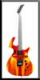
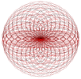
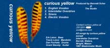
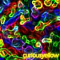
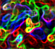

These selections are all thumbnails of the original renders. Please click on directly on the images of interest to view true size copies. If your browser does not support this javascript, you may click on the image titles to view the full size picture files. |
| As detailed in the autobiographical essay, I tought myself 3DStudioR2 for DOS over the course of the last semester of my senior year at Linganore High School. For my final project, I recreated a Parker Fly electric guitar from scratch using graph paper and a small magazine advertisement. Because I did not have access to the official specifications of the guitar, this is only a surface recreation - none of the interior parts were necessary. | ||
Parker Fly |
Parker Fly |
 Parker Fly |
| As a result of my high school notariety for excellence in both technical drawing and computer aided drafting, I was refered the father of a girl in my graduating class for consulting work. He was interested in the possiblility of using 3D Studio to render illustrations for a scientific book he was publishing. After talking with him, we decided that equation ploting software like Mathematica would be a much easier tool for the precision realization of the sketches he brought. I have retained this test project that we drafted because of the interesting spatial possiblities his ideas produced. | ||
|
 Field Shell |
From the Inside |
Electron Microscope |
| A friend of mine asked that I work up a poster concept for him in 3DStudio. The only key elements I was given was the word Enigma and the form of a question mark. | ||
Enigma Organic |
Enigma Electric |
Coffee? |
| As a rabid Led Zeppelin fan (I've since cooled off a bit) I used to be a member of the now renamed mailing list Digital Graphiti. While a member I helped in 2 tape trees, doing cover artwork for the cassettes being mailed around the world of bootleg concerts. Curious parties can peruse my tape list here. |
Midnight Rehearsals |
|
| I have also created a few different image concepts for my band, Curious Yellow. Taking our name from Jeff Noon's novel Vurt, we have recorded one 4 song demo tape in the studio. I hope to make mp3's available of the demo songs soon so that I might attract a singer - we are currently lacking one. | ||
|
 Original Demo Artwork |
 Dreamsnakes LP |
 Dreamsnakes tile |
| The objective of the my indepentdent study semester was the completion of a short handbook to be used in the Graduation requirement class Communications Technology. Typically a freshman level course, the class consists of stations utilizing technology that students rotate through, changing stations weekly. Existing courses include AutoCAD, Desktop Publishing, Video Production, Drafting, Engineering and the like. Unfortunately, I don't have access to the original files that made up the packet, only a hard - copy version in a three ring binder. | ||


{kind=link}
{kind=link}
{kind=link}
{kind=link}
{kind=link}
{kind=link}
{kind=link}
{kind=link}
{kind=link}
{kind=link}
{kind=link}
{kind=link}